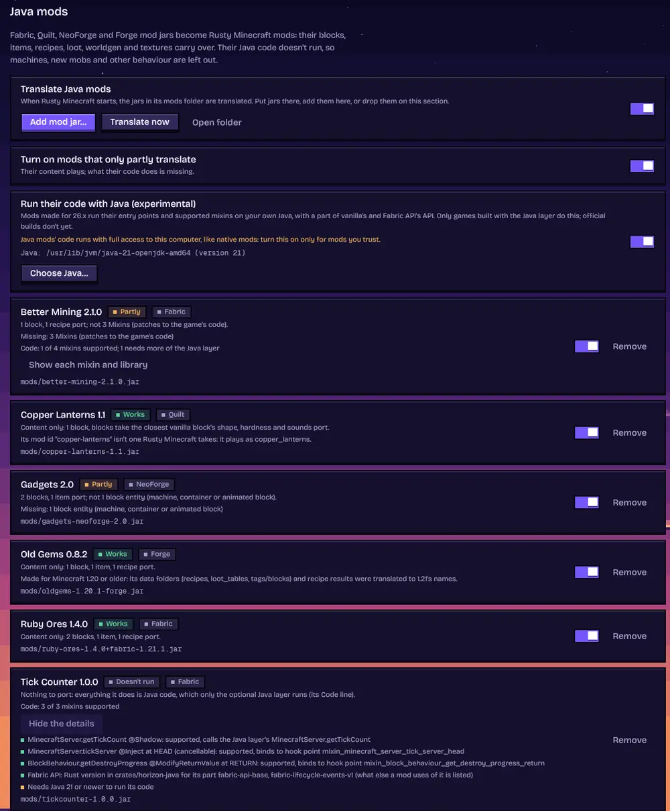
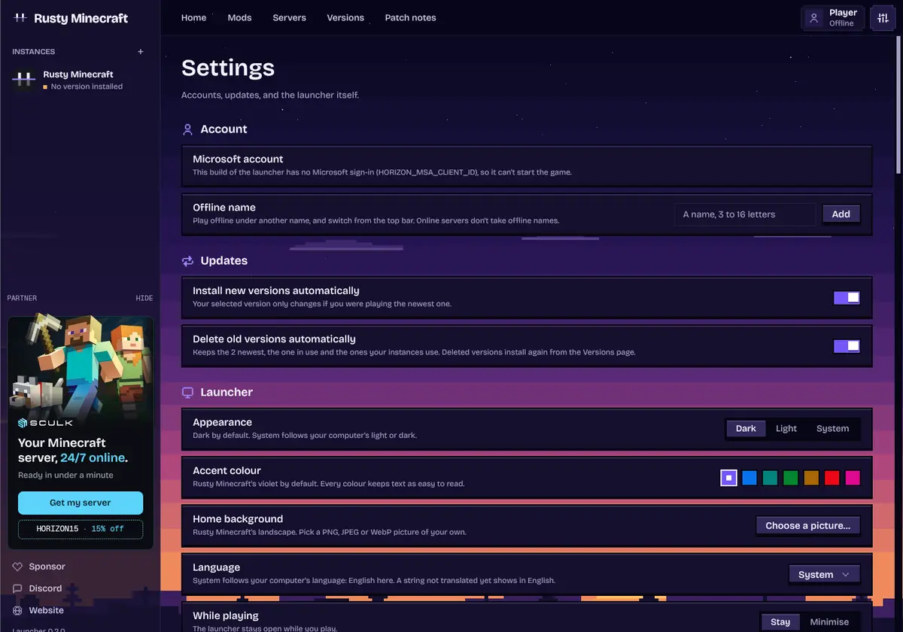
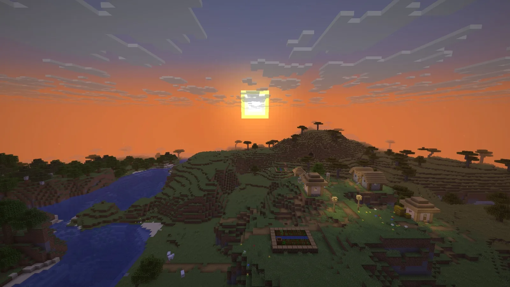
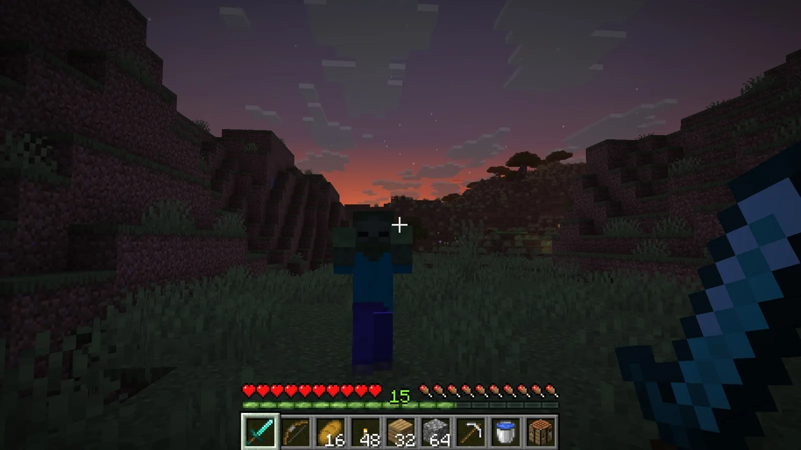
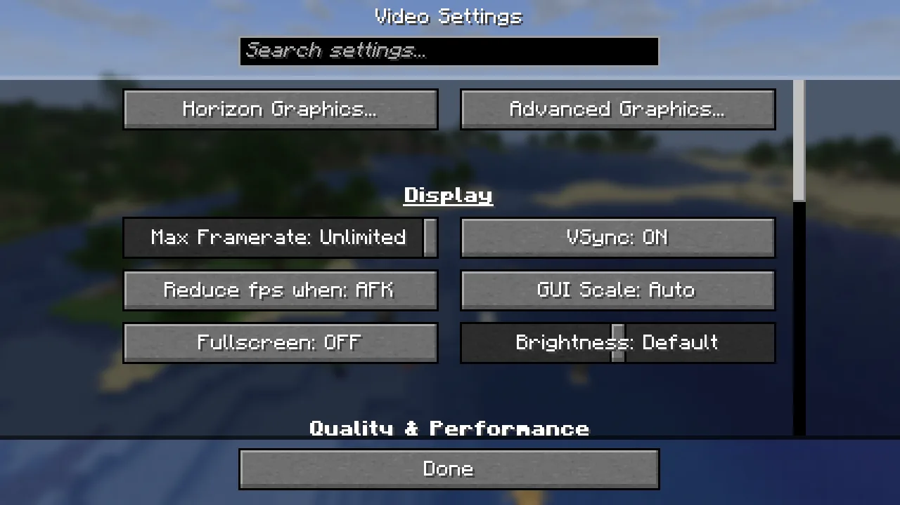
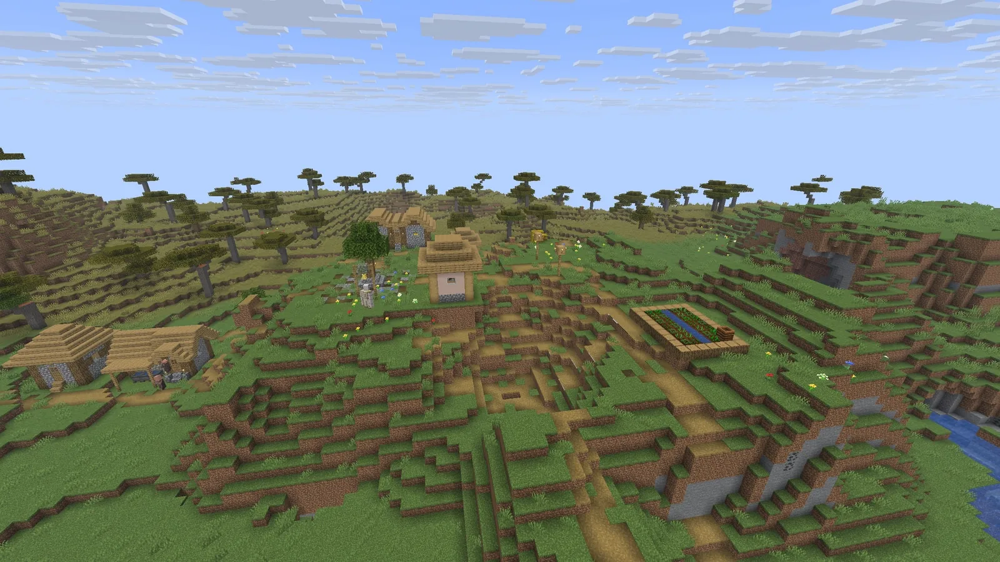
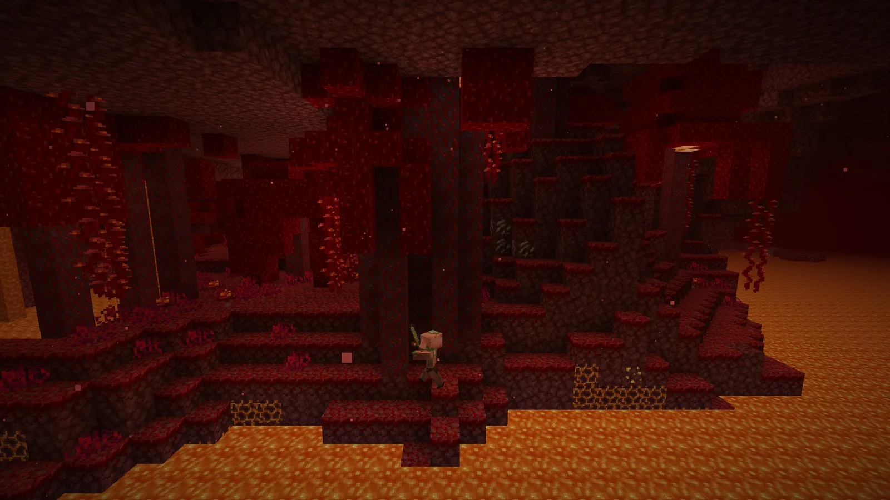

Download · Documentation · Java mods · Project status · Contributing · Upstream: Horizon
Rusty Minecraft
Rusty Minecraft is Minecraft: Java Edition 26.3 rewritten in Rust: a native game that reads the same worlds, follows the same rules and generates the same terrain as the Java game, and is checked against it by more than 300 differential harnesses. You play it through a small launcher, on the files from your own copy of Minecraft. It is free, open source and unofficial.
A fork of Horizon. Rusty Minecraft is a fork of Horizon, the Rust rewrite of Minecraft: Java Edition by Ludovic Marie and the Horizon contributors, released under the MIT licence (see LICENSE). Nearly all of the game, the launcher and the tools here are their work. This fork continues it as its own version and adds a Java mod translation layer: a Fabric, Quilt, NeoForge or Forge mod jar put in the game folder becomes a content mod when the game starts, managed from the launcher's Settings > Java mods (docs/java-mod-translation.md). Horizon's GitHub workflows are parked in .github/upstream-workflows.
Not an official Minecraft product. Not approved by or associated with Mojang or Microsoft. Rusty Minecraft contains no Minecraft code, assets or data: you need your own legally obtained copy of Minecraft: Java Edition 26.3.
Download
Rusty Minecraft has no releases of its own yet: build the launcher from source (launcher/README.md) and the game as below (Build from source). The launcher installs game builds from Horizon's releases until this fork publishes its own, so the game it installs is Horizon's, without this fork's changes; a game built from this repository has them.
You need a Microsoft account that owns Minecraft: Java Edition (the launcher signs in with it, as other launchers do; see Microsoft account) and a GPU with Vulkan or OpenGL 3.3 on Linux, Vulkan or DirectX 12 on Windows, or any Apple Silicon Mac. With no Minecraft on your computer, Play downloads 26.3 and the Java it needs from Mojang for your account, as the official launcher does, then prepares it once. An install you already have (the official launcher, Prism, MultiMC and other launchers all work) is used instead.
 |
 |
What works today
The documentation covers each of these; Horizon's site, playhorizon.dev/docs, describes the upstream game they come from.
- The game: singleplayer with vanilla's world generation, mobs, villagers, raids, redstone, every command, the HUD and the recipe book, on saves in vanilla's format. Worlds from 1.8 to 26.2 are upgraded as vanilla does. Status table.
- Rusty Minecraft's own extras: new menus (vanilla's are one setting away), graphics presets, distant terrain up to 1024 chunks, controller support, optional zoom, minimap and more, all off by default where they would change the vanilla look. See Settings.
- Resource packs and data packs: resource packs work, and data packs load functions, predicates, item modifiers and world generation, taller levels included (vanilla's biomes for now).
- Playing with others: invite friends from the pause menu's Friends button with a code, Open to LAN, and joining servers, online-mode ones with the Microsoft account the launcher signs in with. See Multiplayer.
- Mods: content mods add blocks, items and data, and native mods change the game's own Rust code, built by the launcher on your copy, with no Rust to install. Rusty Minecraft's own (Zoom, FPS Counter, Keystrokes, Minimap, Recipes and Coordinates HUD) are native mods. Java mod jars' code does not run in Rusty Minecraft, but this fork translates what they carry (blocks, items, recipes, loot, worldgen, textures) into content mods when the game starts: Java mod translation. See Mods and data packs.
Screenshots, captured in the Rust client itself with vanilla assets and no mods or shaders:
 |
|
 |
 |
 |
 |
Host a server
The launcher's Servers page creates, starts, backs up and updates a Rusty Minecraft server with buttons, and invites friends over Tailscale. On a VPS, horizon-server installs with one command and runs without Java. Guide: Host a server (reference).
Modpacks
The launcher's Modpacks page imports a Modrinth or CurseForge pack, shows which of its mods Rusty Minecraft can carry over, and plays the ones it can as their own profile. Today that means content mods made of data and assets; mods with Java code are not ported yet. See Modpacks.
Agent control
AI agents and scripts can play Rusty Minecraft. horizon-ctl, shipped beside the game in every release folder, is a command line that reads the game as JSON and acts like a player; horizon-ctl mcp serves the same commands as an MCP server (one tool per command, screenshots returned as images).
horizon-ctl launch --world Survival --seed 5 --wait # finds the version the launcher installed
horizon-ctl state # position, health, food, target, screen...
horizon-ctl find-block birch_log # the nearest logs
horizon-ctl goto -0.5 65 -2.5 --near 2.5 # walks there along a path
horizon-ctl break -1 65 -3 # mines it; replies with the drops
horizon-ctl open-inventory && horizon-ctl click-slot 0 # menus: slots, buttons by label, text fields
Commands block until the action is done and reply with what happened; errors are JSON with distinct exit codes, horizon-ctl help lists every command and horizon-ctl COMMAND --help explains one with examples. It talks to the game over a Unix socket on Linux and macOS and over a token-protected localhost port on Windows. See Agent control in the native client guide.
Build from source
For developers. Requirements: Rust 1.90 or newer, Python 3.10 or newer, JDK 25, and on Linux the ALSA and udev development headers (libasound2-dev libudev-dev on Debian and Ubuntu). Development and the vanilla harnesses run on Linux.
Rusty Minecraft contains no game files, and horizon-prepare never downloads them (the launcher downloads them from Mojang only for a signed-in account that owns the game). It builds its resources from your own copy of Minecraft: Java Edition 26.3, verified against the checksums in research-lock.json:
- Client: install Java Edition with the official launcher and play 26.3 once. Rusty Minecraft reads
versions/26.3/,libraries/andassets/from the launcher's game directory (~/.minecrafton Linux). If yours lives elsewhere, pass--minecraft-diror setHORIZON_MINECRAFT_DIR. - Server jar: the 26.3 server jar, from the
downloads.server.urlin your launcher'sversions/26.3/26.3.json(or minecraft.net/download/server while 26.3 is the current release). Pass it with--server-jaror setHORIZON_SERVER_JAR. It is only needed the first time.
git clone https://github.com/winnerfn8/Rusty-Minecraft.git
cd Rusty-Minecraft
cargo run --release -p horizon-prepare -- --prepare --server-jar ~/Downloads/server.jar # needs JDK 25
cargo run --release -p horizon-prepare -- sounds # optional: sounds from your launcher install
cargo run --release -p horizon-client
Everything prepared lands in the gitignored .local/. It is derived from the game: never commit it or share it.
The client starts on the title screen. Command-line options (--world, --seed, --creative, --render-distance, --dedicated), controls, scripting through horizon-ctl and the architecture are described in the native client guide. The rest of the developer documentation is indexed in docs/README.md, including the parity workflow.
Roadmap
ROADMAP.md is Horizon's roadmap as of the fork, kept for reference; playhorizon.dev/hub shows upstream's current one.
Contributing
Issues and pull requests are welcome: see CONTRIBUTING.md for how we work (vanilla first, small pull requests, labels). A fix to the game that isn't specific to this fork is worth offering to Horizon too. Before opening a pull request, run the self-check and paste the block it prints:
git config core.hooksPath .githooks
python3 tools/pr_ready.py
It runs rustfmt, clippy with warnings denied, the tests of the crates you touched, the Python tests, the public-tree check, and the vanilla harnesses your change can affect. CI runs the same checks on GitHub's Linux runners; the vanilla harnesses need the game, which Rusty Minecraft never downloads, so they run on a maintainer's computer holding their own copy. Never commit game files, decompiled source or prepared resources: tools/check_public_tree.py rejects them, and tracked Java is allowed only under the project's own dev/horizonlab namespace.
Project status
Player-visible gaps: 833 open of the 833 the port ledger found, reading every vanilla 26.3 method against Rusty Minecraft's code: vanilla behaviour a player would notice that Rusty Minecraft doesn't have yet. By area: Screens, HUD and client packets 197; Entity and block rendering, models 129; Animals 110; Server and players on the server 106; Blocks, redstone and fluids 86; Entities, projectiles, vehicles and decorations 64; Monsters and bosses 53; Mob AI, villagers and raids 35; World, world generation and saves 32; Items, enchantments and inventories 21. This number goes down as gaps close (tools/parity_gaps.py); the harness results below say that what is tested matches.
The table below is the project's own audit of each subsystem. Every subsystem now matches vanilla in every harness that compares it. 100% means 100% of what the harnesses compare, not proof that nothing else differs. The remaining known differences are listed below.
Java parity: 100%
Each subsystem scores 0 (absent), 0.25 (started, not playable), 0.5 (playable,
major vanilla features missing), 0.75 (playable, mostly complete) or 1 (complete
and verified against vanilla by differential tests). The percentage is the
average; tests/test_parity.py keeps it in sync with this table. Last audited
2026-10-13 against the harness results: all 281 harnesses pass on Linux, each
rerun whenever one of its inputs changed, and the Mac mini now runs every one of
them too (Rust uses Java's own float maths on each platform).
The harnesses measure behaviour. A second measure is method by method: the port ledger
lists every method of vanilla 26.3 next to the Rust functions that port it, with a verdict for each one
(ported, folded into another function, missing, or needing no port), and the untested ports. Run
python3 tools/port_ledger.py build, then coverage, with the vanilla data in .local/.
| Subsystem | Score | Main gaps |
|---|---|---|
| Window, input and game loop | 1 | None: the game loop, options, camera, auto-jump, toggle sprint/sneak, local input and the frame limiter match vanilla |
| Assets and resources | 1 | None: item models match vanilla over 196,290 stacks and the client draws every item through them; the resource pack screen matches vanilla's drawing over 3,000 sessions of clicks, scrolling and searching, its incompatibility confirmation included |
| Network protocol and multiplayer | 1 | None: joins vanilla servers; the dedicated server (--dedicated) matches vanilla's files, status ping, login, configuration, play, chunks, chat, recipes, advancements and command tree, a client built from vanilla's packet code joins it, Rusty Minecraft joins a vanilla server, and LAN discovery matches over 462 cases (offline mode only) |
| Chunk storage and palettes | 1 | None: client and saves share paletted containers, identical to vanilla over 266 scenarios |
| Section meshing | 1 | None: 112 scenes and over a million quads identical to vanilla |
| Rendering | 1 | None: entity models, block entity renderers (407 cases, End portals, gateways and the loom's banner preview included) and their animations (296 cases, End gateway beams included), the HUD overlays (2,200 states), the recipe book (600 states), the player list, subtitles and the world border match vanilla |
| Lighting | 1 | None: saved and relit light matches vanilla, slabs and stairs included |
| World generation | 1 | None: 2,352 whole chunks over 225 structure sites, in all three dimensions, identical to vanilla |
| Region files and saves | 1 | None: saves round-trip with vanilla, and worlds from 1.8 to 26.2 upgrade as vanilla's DataFixers do, superflat worlds included; old options.txt and hotbar.nbt files are upgraded too |
| Entities and physics | 1 | None: attributes, dimensions, death loot, spawn rules, natural spawning (15,500 cases), raids and patrols (1,900 cases), spawned mobs' gear, enchantments and state (finalizeSpawn, 24,000 cases) and mob AI (92 scenarios: villager breeding and gossip, the warden, ghastlings and copper golems included) match vanilla |
| Interaction and inventory | 1 | None: menu clicks match over 8,000 click sequences, the loom and the crafter included; recipe book placement (6,000 cases), its buttons (1,200), the saved book (1,500) and the loom and crafter screens (1,600) match vanilla |
| Menus, HUD and chat | 1 | None: every command runs as vanilla (758 commands over 39,685 parsed inputs), scoreboards and teams match (81,000 operations), the player list matches over 872,000 draw calls with heads drawn from players' skins (authlib's textures, SkinManager's lookup, legacy skin conversion), and the chat matches focused and scrolled; the resource pack screen (selection over 4,000 cases, drawing and its incompatibility confirmation over 3,000 sessions) and the chat input with its command suggestions, usage lines, Tab completion and history (3,000 sessions on vanilla's client command tree) match vanilla |
| Audio | 1 | None: the sound engine, sound events, music, situational music, ambience and subtitles match vanilla |
| Block behaviours and ticking | 1 | None: block updates, random ticks, redstone, dispensers (6,000 cases), crafters (4,000 crafts), block entity removal (containers spill, 4,000 cases), copper golem chest sorting and the sculk family (435 scenarios: shrieker warnings and warden summoning included) match vanilla |
Known issues
Skins served over https show the default skin unless already cached; pack icons show the unknown-pack texture in game; item tooltips lack attribute lines.
Licence
MIT, for the project's original work only. Dependencies keep their own licences. Minecraft is a trademark of Mojang Synergies AB; Minecraft code and assets belong to Mojang and Microsoft and are covered by the Minecraft EULA. Decompiled game source and prepared resources stay on your machine and are never published.
Third-party credits and licenses: Third-party notices.
Author
Made by Ludovic Marie (@ludovic111).